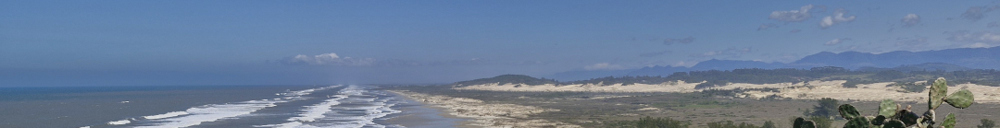
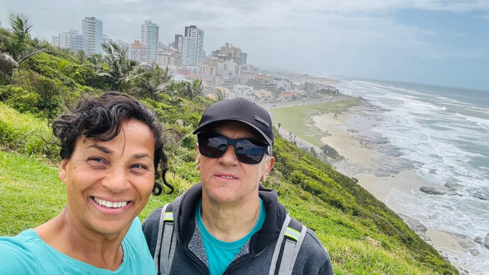
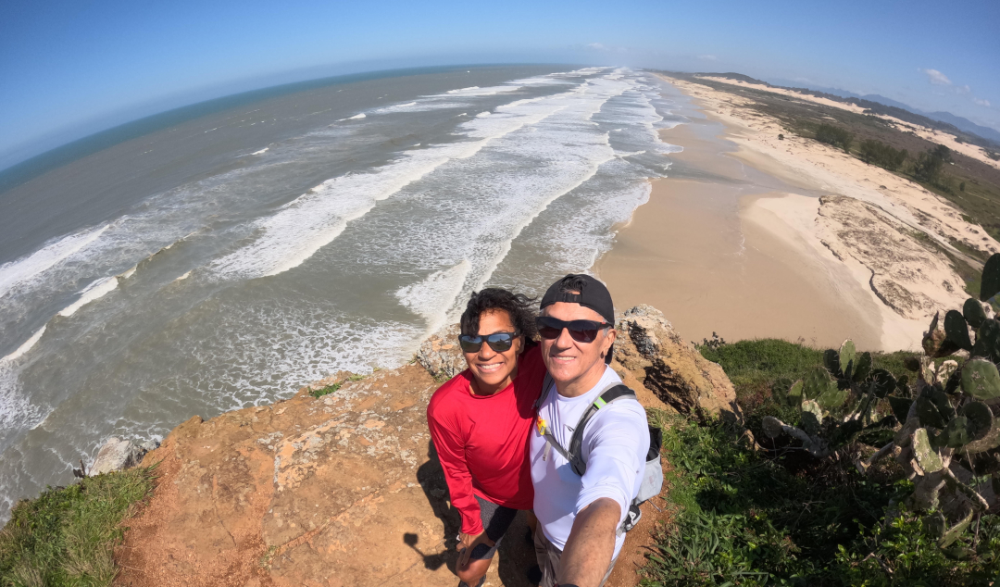
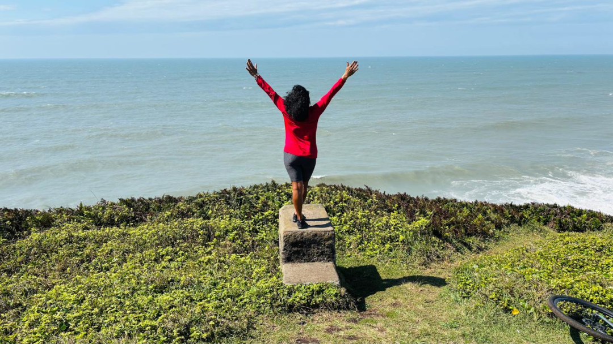
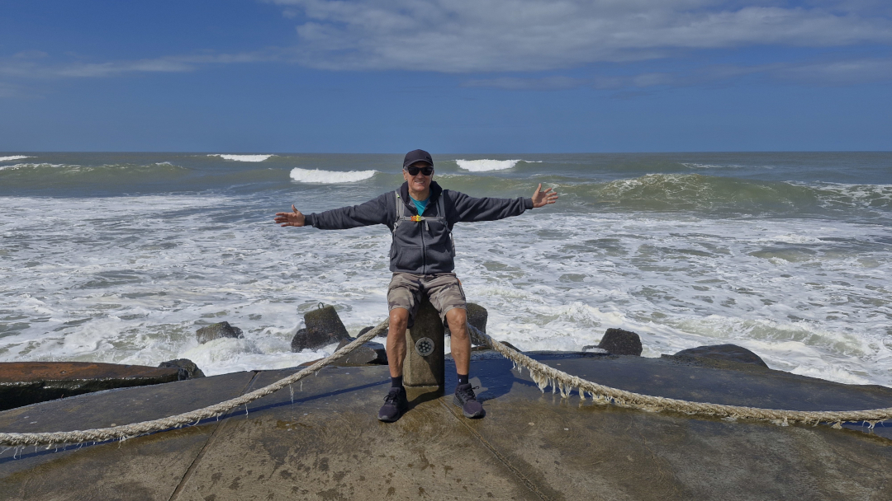
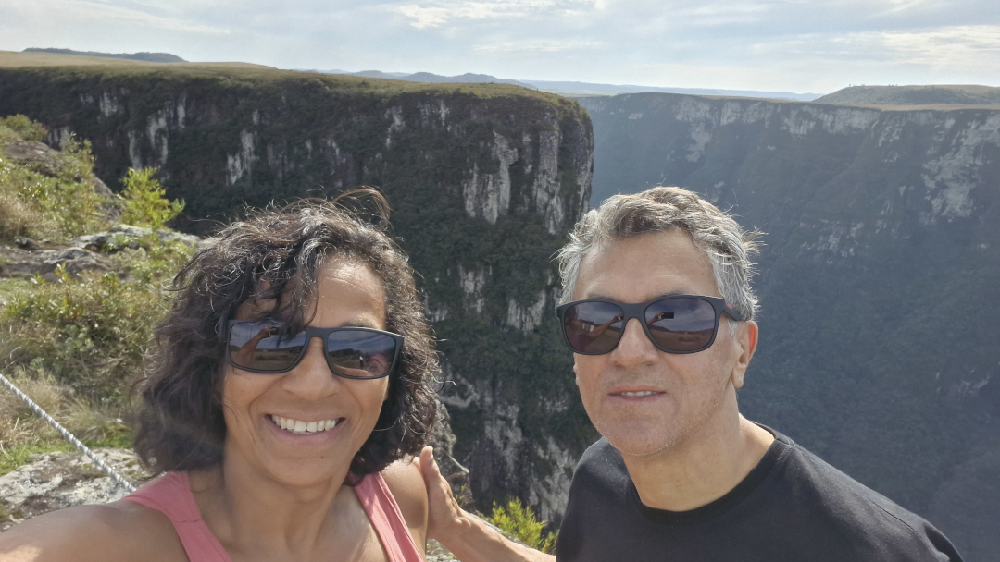
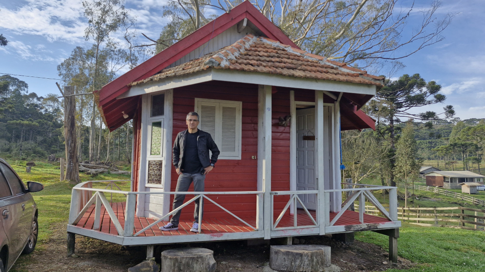
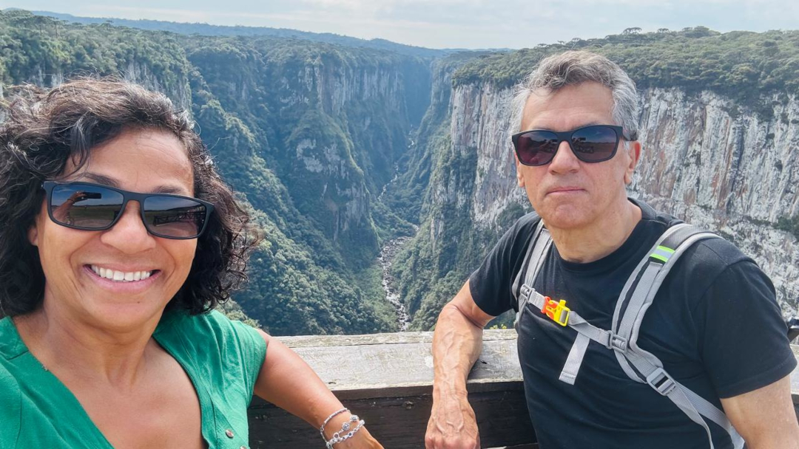
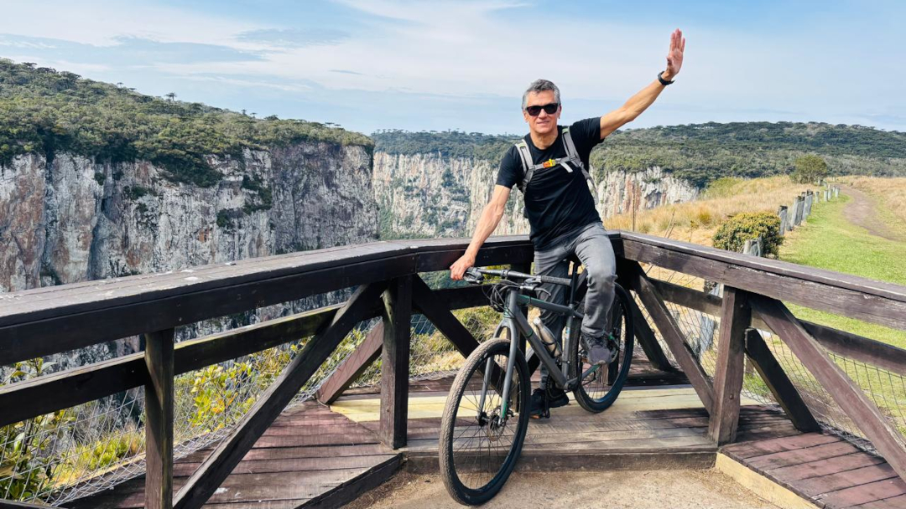

Chegamos a Torres (RS) no dia 15/09/2025, por volta das 16 horas, depois de percorrer quase 1.800 quilômetros, vindo de Bonito (MS). Eu já havia pesquisado sobre a região, mas não tinha muitas informações sobre a cidade. Eu e a Teresa adoramos o lugar e, como sempre fazemos, começamos logo a explorar, descobrindo paisagens e lugares lindos. Ficamos lá por quatro dias, durante os quais fomos duas vezes à cidade de Praia Grande (SC) e, depois, seguimos para Cambará do Sul, onde permanecemos por mais um dia.

Pegamos as bicicletas e subimos os morros, de onde vimos paisagens lindas.

Era um dia de meio de semana, em período de baixa temporada; nos sentimos donos de toda essa beleza.

Sensação de liberdade.

E pertencimento.

Chegamos a Cambará do Sul, almoçamos e seguimos para visitar o maior cânion brasileiro, o Cânion Fortaleza. Os paredões são impressionantes.

Passamos a noite nesta cabana muito aconchegante. Pela manhã, acordamos com o canto dos pássaros, preparamos nosso café e partimos para conhecer o majestoso Cânion Itaimbezinho.

Nesta imagem dá para ver, lá embaixo, o Rio do Boi — o mesmo por onde fizemos uma trilha quando visitamos a cidade de Praia Grande.

Inseparável, com ela foi possível chegar aos principais pontos e trilhas do Cânion Itaimbezinho.